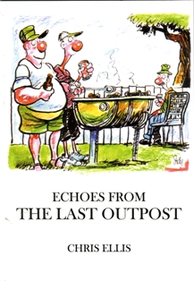

Echoes from The Last Outpost
 In these pages you will read about horse psychology, the KwaZulu/Natal braaivleis, how to talk to your compost heap and about a rugger match between the Michaelhouse sixth team and Maritzburg college eighth team. It had, for some reason, never been reported before in the annals of South African rugby until it was published in the Witness, in which many of these stories were previously published.
Press comments on its predecessor, Despatches from the Last Outpost:
"He's a funny chap this Chris Ellis. Very funny"
Natal Mercury
"Writing humorous material is by no means easy, but this writer has the recipe to
the last ingredient"
The Argus
Chris Ellis is a family physician, author and humorous journalist. Articles from his books were selected for inclusion in Laugh the Beloved Country, a collection of the best South African humour of the last 200 years.
Anthony Stidolph, 'Stidy', is one of South Africa's leading cartoonists. He has illustrated more than twenty books.